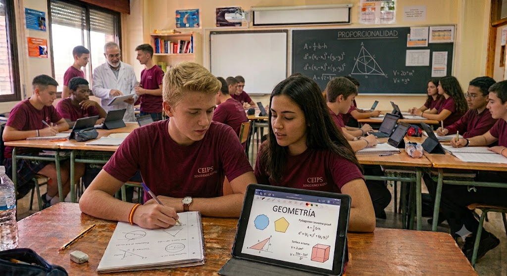

Geometría
Áreas y volúmenes de cuerpos geométricos, teorema de Pitágoras aplicado y poliedros.

Tema 9 (Geometría métrica) y Tema 10 (Vectores y geometría analítica).
Áreas y volúmenes de cuerpos geométricos, teorema de Pitágoras aplicado y poliedros.
Componentes de un vector, operaciones, ecuaciones de la recta y posiciones relativas.
Los archivos de ejercicios se descargan directamente desde cada tema una vez que el contenido correspondiente se haya visto en clase.